MOUND is a small solar-powered sensor array watching the backyard from a post in the garden.
It logs temperature, humidity, pressure, light, and soil conditions every thirty minutes —
not because the data is particularly useful, but because paying attention is its own reward.
Simplicity is deliberate; ambiguity is a feature.
Deliberate Simplicity
We're inundated with powerful technology nowadays; the glass computers we carry in our pockets
are practically indistinguishable from magic. But this project isn't about pushing humanity forward.
To the contrary, it's about slowing down and paying attention. It's about integrating clever,
human-made tools with nature as a deliberate way to observe and document... and simplicity is the point.
I could've spent ~$1,200 on a pre-built weather station, or even just downloaded a weather app
on my glass pocket computer, but the journey's at least partly the point. The other part is
interpretation and observation as a sign of respect and admiration.
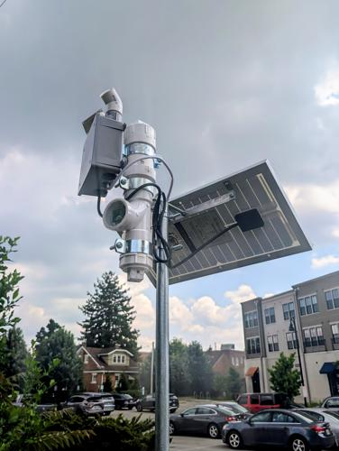
MOUND with upgraded solar panel.
Basic Avatars
I've always loved the idea of human space flight and exploration, but as I've gotten older,
I've grown to love our robot surrogates even more. Unfortunately, human space travel is insanely
difficult and mostly impractical. We can send robots in our stead to explore quicker, faster, cheaper.
The downside, though, is comparatively limited data acquisition; we only get a select few data points
to collect and scrutinize depending on the onboard sensors. In order to build a complete picture,
we must extrapolate...
Ambiguity as a Feature, not a Bug
The scariest monster isn't the one shown on screen, it's the one in your imagination. The corporate
weather app or the fancy store-bought weather station would've provided much more detailed information,
but ambiguity is intriguing — who doesn't love a good mystery?! Creating a story out of scraps
of data is so much more fulfilling. A picture from the surface of Mars tells us SO much about the
environment and what it would be like to visit and explore, but a word-picture is richer and more
compelling; it's why the book is always better than the movie. MOUND's simple text data files and
graphs are deliberate, and only half the story. The other half is the imagined world
MOUND inhabits.
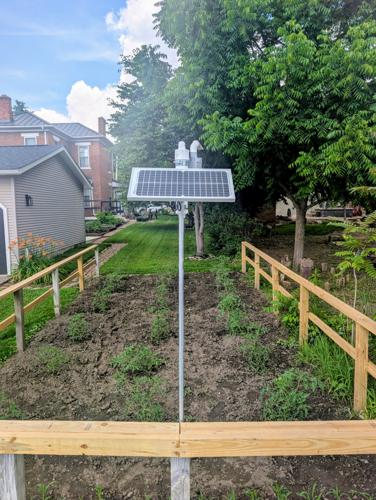
MOUND watching.
Imagined Reality
Think of the last nature documentary you watched or a memorable National Geographic photo... those
are real places. Those places actually exist. Pick out a rock in the foreground —
that rock is probably still there! Imagine sitting next to it: Maybe it's early evening... sun
setting, light breeze, quiet. Pick it up, feel the weight in your hand. The dirt is warm and comforting.
Scan the horizon. Notice the patterns in the clouds and the trees in the distance. The rock experienced
this for eons and will continue to lie there patiently for eons after you've left.
Those dark scenes at the bottom of the ocean with the roaming crabs on the whale carcass are just as
real and are playing out right now. So are the cliffs of the Valles Marineris — the Grand Canyon
on Mars. A rock just slipped from the top and tumbled down even though no one was there to hear it.
It still happened.
The select few data points from this humble weather observatory set the stage for a real place on an
actual planet in a solar system in a genuine galaxy.
“That's here. That's home. That's us.” ...and these sparse data points from MOUND start to tell
the story of this tiny, remote outpost here on Earth.
the build
Practicality vs. Play
I could have easily thrown all these components in a box where everything is accessible with plenty
of room for upgrades and adjustments, but where's the fun in that? I love practicality, but
art and play is where the soul of life lives.
Instead, I had Tatooine mechanisms on my mind while designing the enclosure; weird devices with
questionable purposes integrated with the planet because... it's cool! We all need a little more
whimsy in our lives.
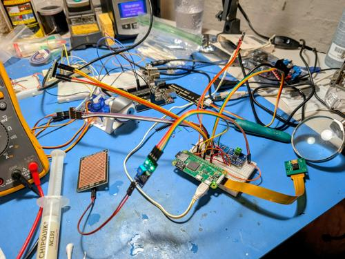
Prototyping and testing.
Intelligent Evolution
I know. It's messy. It's technically "poorly designed". Why would I wire that there?
Well, I'm a tinkerer, not a designer. I build and create and add... and whatever comes out at the end
is anyone's guess. Building is more fun that way! I like to think of it almost like gestation; parts
get added and tested, then things get left like vestigial organs. It infuses character and uniqueness
instead of boring standardization. Feels more alive, and "mine".
What's in a Name?
The names of a few of my previous projects were inspired by indigenous peoples of this area:
Adena & Hopewell. While brainstorming to continue the trend, I realized the street I live on
is called "Mound", as in, effigy mounds built by Native American cultures. Seemed too fitting to pass up.
These people — real people with stories and experiences of their own — were naturalists too.
They built mounds to observe the sky, to mark seasons, to pay attention to the land. MOUND is doing
something quietly similar — sitting on that same Ohio earth, watching the sky, and marking time.
The data files are just a different kind of mound... layers of accumulated observation, one reading at a time.
what it sees
On June 11th, 2026 — one of the first full days of uninterrupted logging — a storm rolled through
Central Ohio in the early evening. MOUND watched the whole thing unfold in real time:
Temperature dropped sharply from 90°F down to 82°F right at the rain event. Humidity spiked dramatically — jumping from ~45% back up to 67% instantly. Pressure plummeted to its lowest point of the day right at that moment — the storm system arriving. Light — already near zero as the storm clouds rolled in. Soil temperature — barely flinched, all that thermal mass absorbing the shock. Soil moisture — dry all day around 15000, then the rain hit and it shot up to 18000+ instantly and kept climbing.
That's a complete weather event captured in six sensor channels. You can literally watch the storm
arrive, hit, and the aftermath unfolding in real time.
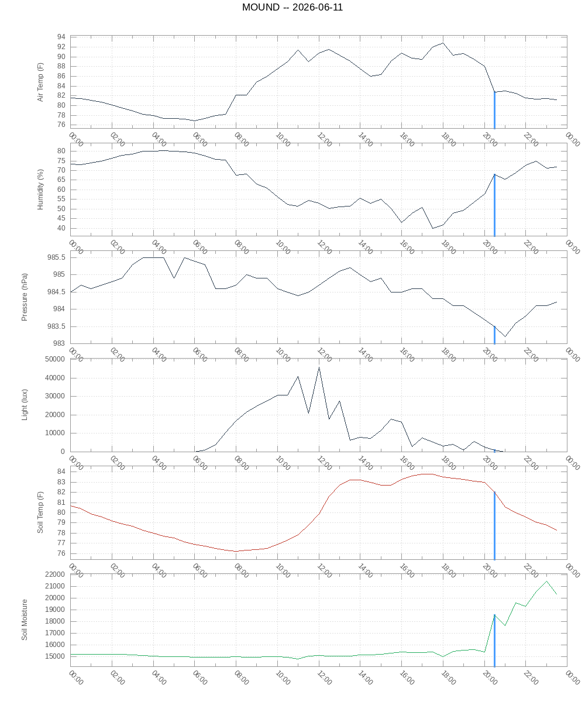
June 11, 2026 — six sensor channels on a shared time axis. Storm hits at 20:00.
how it works
All sensors are wired to a Raspberry Pi Zero W mounted inside a weatherproofed
PVC enclosure on a pole at the back of the garden. Every thirty minutes a Python script reads
all sensors and appends one line to a flat text file — no database, no framework, just a
timestamp and a handful of numbers. Another script generates graphs using gnuplot and publishes
everything to this site automatically.
Sensors: BME280 for temperature, humidity, and barometric pressure. TSL2591 for
light and lux. DS18B20 waterproof probe for soil temperature. Capacitive sensor for soil moisture.
FC-37 rain sensor. Raspberry Pi Camera Rev 1.3 for periodic photography.
Power: A Waveshare solar charge controller manages a 10W solar panel and three
18650 lithium-ion cells. The system runs continuously day and night, recharging through the day
and drawing from the batteries overnight. A toggle switch on the enclosure — because of course
there's a toggle switch.
gallery
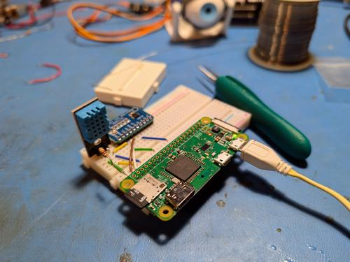
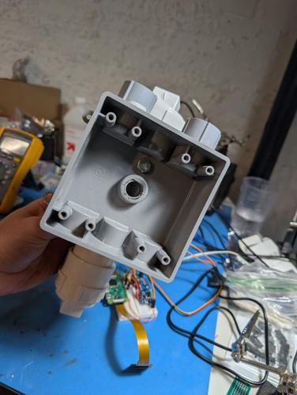
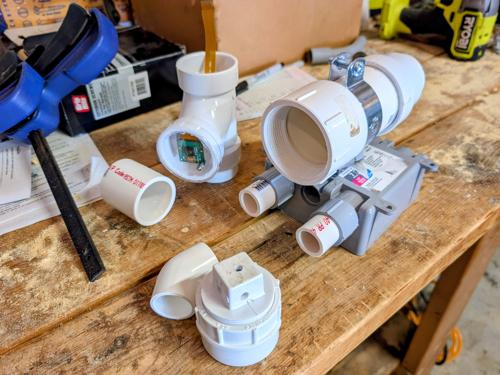
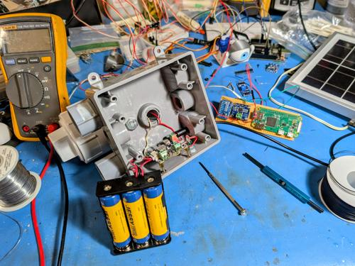
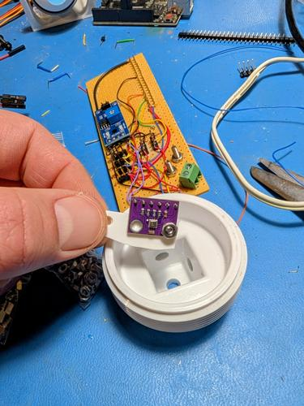
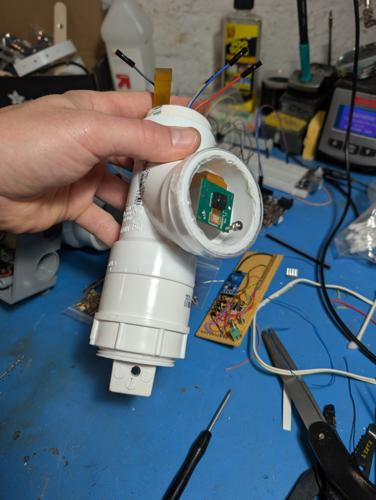
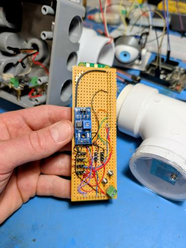
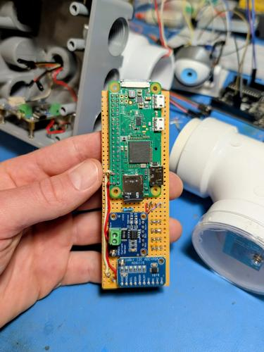
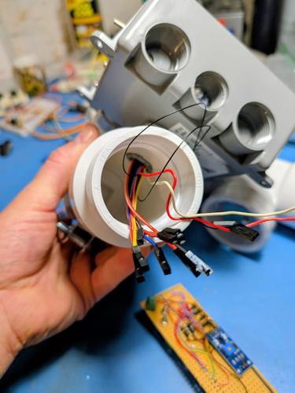
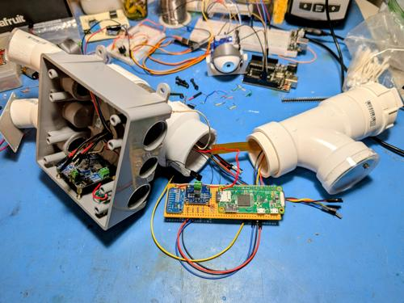
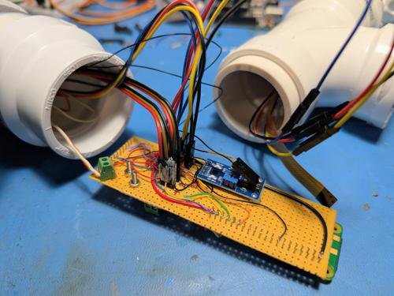
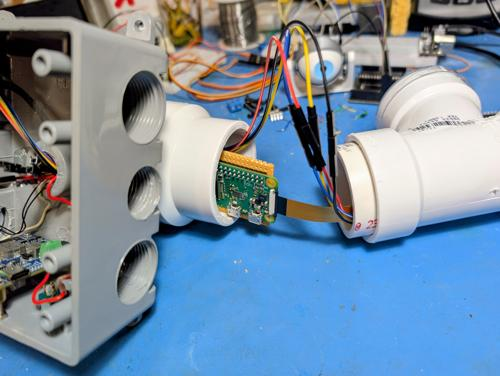
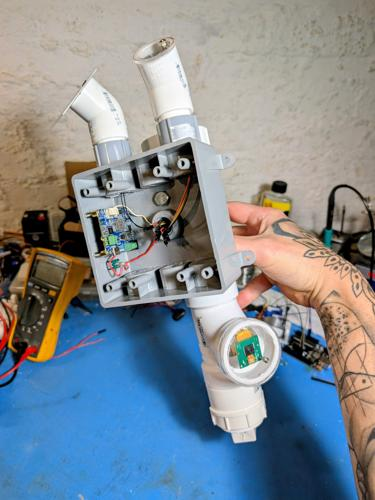
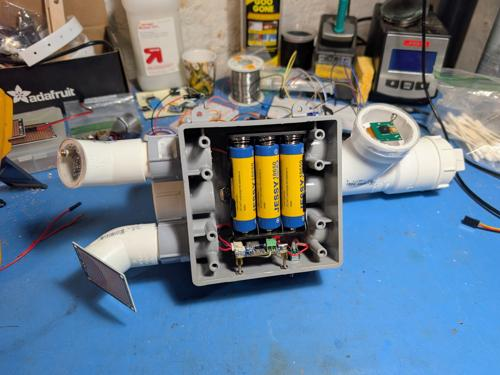
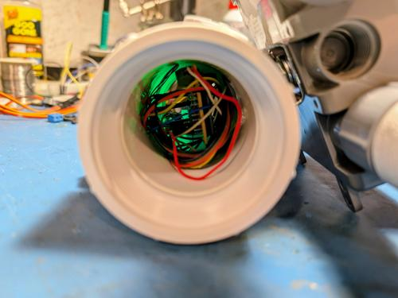
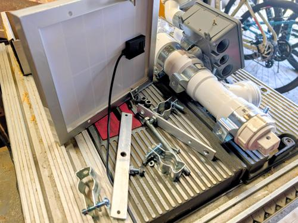
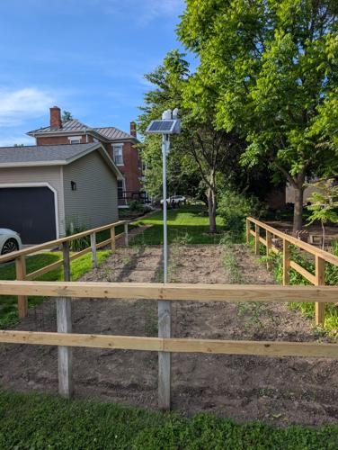
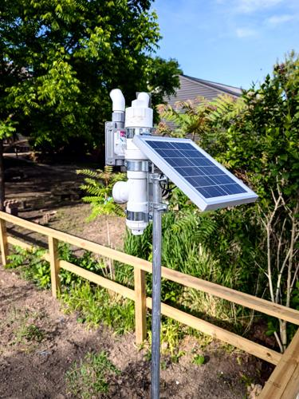
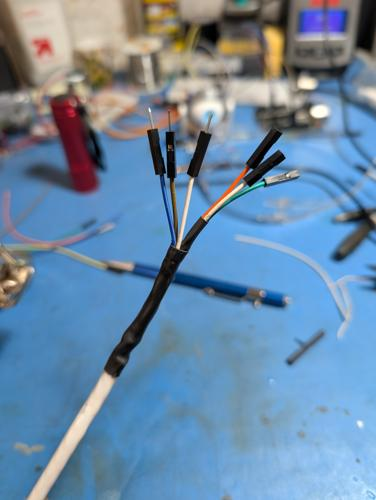
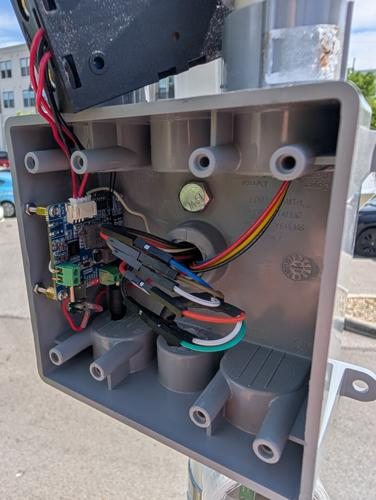
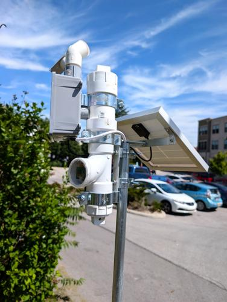
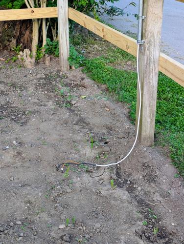
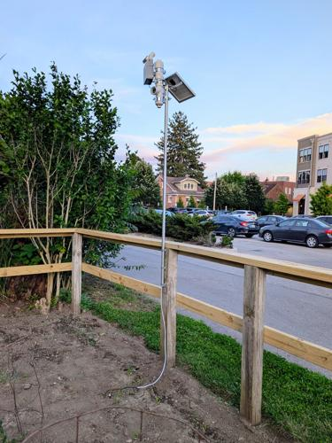
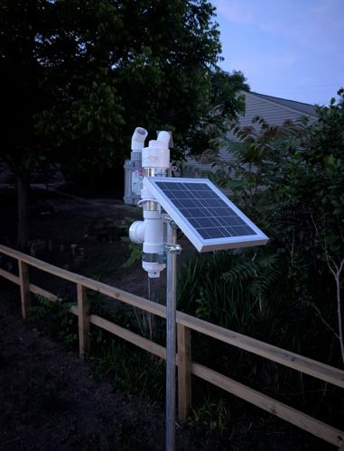
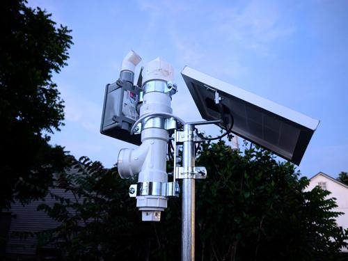
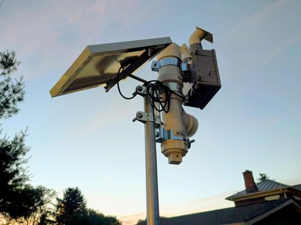
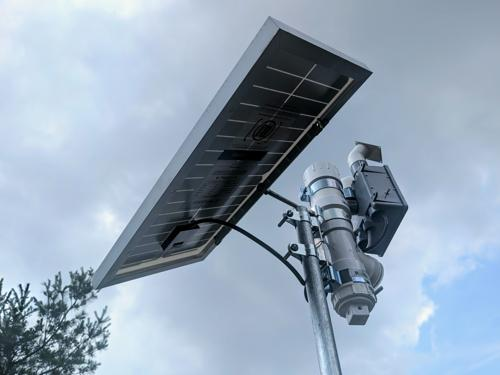
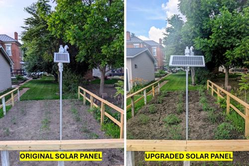
- At the edges where nature and technology meet, something unexpected happens... not contradiction but a conversation. MOUND is a handful of cheap sensors on a pole in a Central Ohio garden, patiently logging the world in sparse numbers every thirty minutes. The data is only half the story. The other half belongs to imagination.